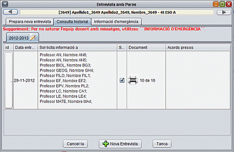
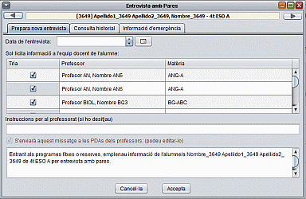
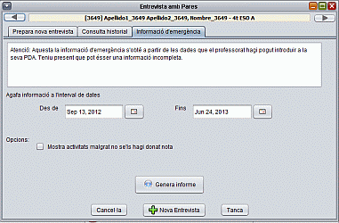

Mòdul de Fitxes-Tutoria
Entrevista amb la família de
l'alumnat
Suposem que el tutor vol tenir una
entrevista amb els pares d'un alumne de la seva tutoria. Primer
seleccionam de la llista de la pantalla principal l'alumne/a en
qüestió. Anam a menú Tutoria/Entrevista amb pares. Se'ns
obrirà una finestra com la següent

A la primera pestanya podem iniciar
una nova entrevista, a la segona
consultar les entrevistes que hem fet i a la tercera obtenir
informació
d'emergència.
Per defecte s'obri la segona pestanya
on apareix l'historial d'entrevistes realitzades aquest any i anys
passats. Si es pitja sobre el document (icona impresora) es pot obrir
la informació que ha passat l'equip docent. A la mateixa
columna, 10 de 10 indica que han contestat 10 professors dels 10
sol·licitats. A la columna acords presos es poden escriure
anotacions de l'entrevista.
Seguint amb el nostre exemple, ens
posam a la pestanya nova entrevista. Seleccionam la data de
l'entrevista. Triam els professors dels quals volem informació.
Seleccionam el quadre “enviar un missatge a les PDAs dels
professors” si volem que els professors siguin avisats
mitjançant un missatge a les seves PDAs personals. Podem
personalitzar el missatge i finalment, pitjam el botó accepta.

Sol·licituds de recollida
d’informació
Cada pic que cream una nova entrevista, s'enviaran sol·licituds
de recollida d'informació a l'equip docent seleccionat.
Informació
d’emergència
És possible que vos trobeu en
el cas que heu de fer una entrevista amb pares a darrera hora i no heu
tingut temps de recollir tota la informació dels professors. La
informació d'emergència obté informació des
del sistema SGD, és a dir, notes d'activitats que els professors
hagin introduït a les seves PDAs. Per aquest motiu, és
possible que la informació sigui incompleta. De totes maneres
pot ésser-nos útil per l'entrevista amb els pares.

Per generar l'informe, triau el rang de dades i pitjau el botó
genera informe.